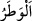
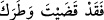
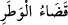
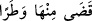
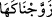

evlendirme husûsunu icrâ konusunda “mü’minlere bir güçlük olmasın” buyurmuştur.
“Zeyd, o kadından” eşi Zeyneb’den “ilişiğini kesince” Zeyd’in Zeyneb’de ihtiyâcı,
arzusu kalmayınca, ona olan ilgisi sona erince, onu boşayınca ve Zeyneb de iddetini
tamamlayınca “biz onu sana nikâhladık ki evlâdlıkları, karılarıyla ilişkilerini” kesip
onlara bir ihtiyâcı kalmayıp onları boşadıklarında ve iddetleri dolduğunda
evlâdlıklarının boşamış oldukları hanımlarla evlenmeleri konusunda “mü’minlere bir
güçlük” darlık ve sıkıntı “olmasın.” Elbette Rasûlullah (s.a.)’de onlara pek güzel bir
örnek vardır.
el-Kamûs’ta der ki: “ ihtiyaç veya senin için pek önem ve değer ifade eden bir
hâcettir. Ona ulaşınca ihtiyacını görmüş olursun (). el-Vasît’ta der ki:
“Lügatte “ın mânâsı, gönülde olan şeyin sonuna ulaşmak demektir. Kişi arzu
ettiği hacete ulaşıp onu elde ettiğinde “ denir. Daha sonra talâkı/boşanmayı
ifâde etmek için kullanılmıştır. Çünkü kişi ancak hanımına ihtiyacı kalmayınca onu
boşar.
et-Te’vîlâtü’n-Necmiyye’de der ki: “Sûrette Zeyd’in vatarı/hâceti, nikâh ile
Zeyneb’den hazzını tam olarak almasıdır. Mânâda ondan vatarı/hâceti ise onun kıyamete
kadar insanlar arasında şöhret bulmasıdır. Çünkü Allah Teâlâ Kur’an’da sahâbenin
hepsi dışında sadece onu ismiyle zikretmiştir. Hz. Zeyneb’i Hz. Peygamber (s.a.)’in
tercihine arzetmekle O’nu kendisine tercih etmiştir.
el-Es’iletü’l-müfhıme’de der ki: “Allah ve Rasûlü Hz. Zeyd’e hanımını tutmasını
emrettiği halde nasıl oldu da o hanımını boşadı?” denilirse, bunun cevabı şöyledir: Bu
emir vücûb ve lüzûm için değil sadece müstehablık için bir emirdir.
Sahih olan görüşe göre bu evlilik hicretin dördüncü yılında Zülkade ayının başında
Hz. Zeyneb otuz beş yaşında iken olmuştur.
“ ifâdesinden murad, Allah Teâlâ’nın Hz. Peygamber (s.a.)’e Hz. Zeyneb’le
evlenmesini emretmek veya bir akid vâsıta olmaksızın Hz. Zeyneb’i O’nun zevcesi
kılmaktır. Enes (r.a.)’dan nakledilen şu rivâyet de bunu desteklemektedir: “Hz. Zeyneb
Hz. Peygamber (s.a.)’in diğer hanımlarına karşı övünür ve: “Sizi âileleriniz/velîleriniz
evlendirdi beni ise yedi kat göğün üstünden Allah evlendirdi.” derdi. Yâni Âlemin
Efendisi, bu âyetin inmesinden sonra Hz. Zeyneb’in evine izinsiz olarak geldi. Zeyneb:
“Yâ Rasûlallah! Nikâh ve şâhid olmadan mı?” diye sorunca Hz. Peygamber (s.a.):
“Nikahı kıyan Allah, şâhid de Cebrâil’dir.”[218] buyurdu. Bu durum Hz. Peygamber
(s.a.)’e mahsus özelliklerdendir.
Ebû Hanîfe ve Ebû Yûsuf’un aksine İmam Muhammed şâhidsiz nikahı geçerli
saymıştır. İmam Muhammed nikâhı alış-verişe kıyas etmiştir. Çünkü nikâh kadının
kadınlığını satmasıdır. Bunun bedeli de mehirdir. Alışverişte bizzat akdin meydana
gelmesinde şâhide ihtiyaç olmadığı gibi nikâhta da durum aynıdır. Ebû Hanîfe ve Ebû
Yusuf sonuca baktılar. Çünkü nikâh şâhidler huzurunda olmaz ve ilan edilmezse, zinâya
hamledilebilir. Hz. Peygamber, nikâhı bozulmaktan ve mü’minleri zinâ şüphesinden